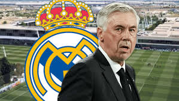

Liga MX Femenil
Tatiana Flores emite cominucado sobre las notas
falsas que han circulado en los últimos días: "Ya basta"
La delantera de la Selección Mexicana Femenil juvenil reclama por los
rumores que la señalan en el despido de Siboldi de Tigres.
Después de la salida de Robert Dante Siboldi de la dirección técnica
de Tigres, comenzaron rumores que lo vinculaban con Tatiana Flores,
juvenil delantera de Tigres Femenil y de la Selección Mexicana Femenil
Leer noticia
Real Madrid
El Real Madrid desmiente a Ancelotti:
"El club no se ha cuestionado la participación en el nuevo Mundial"
"Por tanto, nuestro club disputará, tal como está previsto, esta competición oficial",
se lee en el comunicado

El Real Madrid ha emitido un comunicado para desmentir a Ancelotti y asegurar que el club sí participará en el nuevo Mundial de Clubes
previsto para disputarse entre el 15 de junio y el 13 de julio de 2025.Video thumbnail
Ancelotti, sobre el Mundial de Clubes: "Al igual que el Real Madrid, otros clubes rechazarán la invitación"
"El Real Madrid C. F. comunica que en ningún momento se ha cuestionado su participación en el nuevo Mundial de Clubes que organizará
la FIFA en la próxima temporada 2024/2025. Por tanto, nuestro club disputará, tal como está previsto, esta competición oficial que afrontamos
con orgullo y con la máxima ilusión para volver a hacer soñar a nuestros millones de aficionados por todo el mundo con un nuevo título", se lee en el comunicado.
Leer noticia
Real Madrid
Vinicius, tras la condena a tres aficionados del Valencia:
"No soy víctima de racismo, soy un verdugo de racistas"
"El brasileño se ha manifestado tras la sentencia de
ocho meses de presión y dos años sin entrar a estados a tres aficionados del conjunto che
El Real Madrid ha emitido un comunicado para desmentir a Ancelotti y asegurar que el club sí participará en el nuevo Mundial de Clubes
previsto para disputarse entre el 15 de junio y el 13 de julio de 2025.Video thumbnail
Ancelotti, sobre el Mundial de Clubes: "Al igual que el Real Madrid, otros clubes rechazarán la invitación"
"El Real Madrid C. F. comunica que en ningún momento se ha cuestionado su participación en el nuevo Mundial de Clubes que organizará
la FIFA en la próxima temporada 2024/2025. Por tanto, nuestro club disputará, tal como está previsto, esta competición oficial que afrontamos
con orgullo y con la máxima ilusión para volver a hacer soñar a nuestros millones de aficionados por todo el mundo con un nuevo título", se lee en el comunicado.
Leer noticia